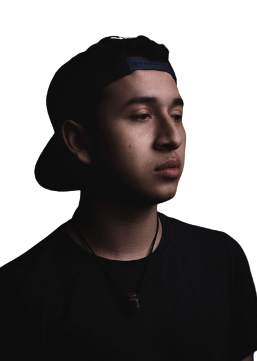

<div class="content">
  <svg viewBox="0 0 100 100" class="middle">
    <defs>
      <path id="circle"
        d="
          M 50, 50
          m -37, 0
          a 37,37 0 1,1 74,0
          a 37,37 0 1,1 -74,0"/>
    </defs>
    <text>
      <textPath xlink:href="#circle">
        • Frontend developer • Angular • HTML • CSS • JavaScript • Flutter
      </textPath>
    </text>
  </svg>

  <div class="image__circle middle">

    <div class="semi-circle">
      <picture>
        <source media="(min-width: 1000px)" srcset="../../../assets/images/FernandoD-NoBack.png" type="image/webp">
        
      </picture>

    </div>
  </div>
</div>
